Waterpark Weekend 2010
Raging Waters Wild Rivers
Ok. So this summer, we decided to go to both Raging Waters and Wild Rivers and have a Waterpark Weekeknd. (Don't be fooled by the name. The visits were a week apart.) Anyways, we went back to Raging Waters for a very specific reason.
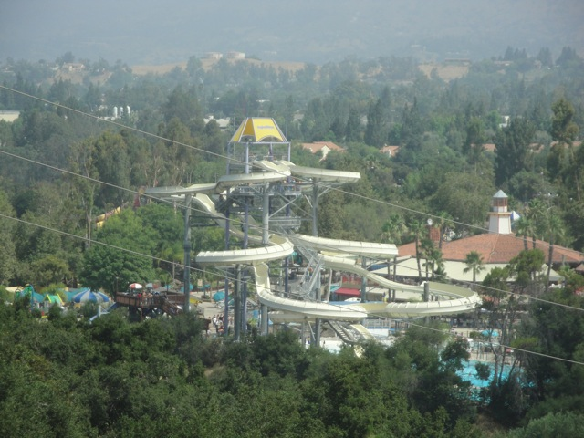
To get more rides on High Extreme because we love that ride on Incrediblecoasters!! =)
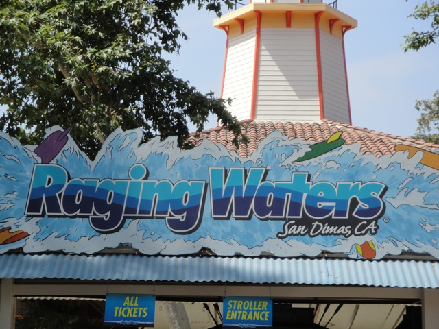
We have arrived at Raging Waters.
 Actually, the real reason we came was to see their new slide, Dr. Von Dark's Tunnel of Terror since it seemed awesome in the commercials.
Actually, the real reason we came was to see their new slide, Dr. Von Dark's Tunnel of Terror since it seemed awesome in the commercials.
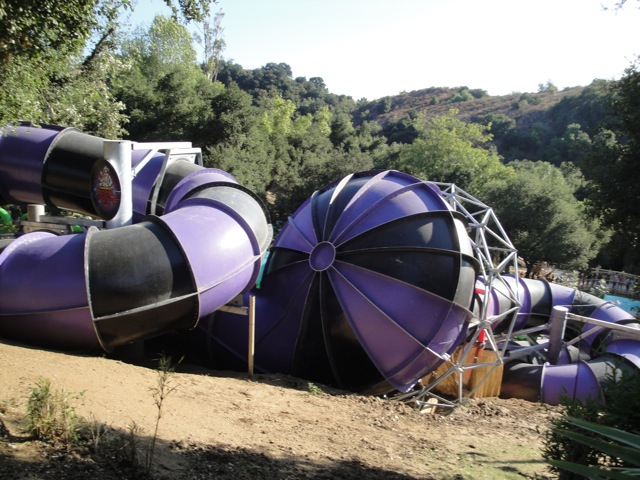
Dr. Von Dark is a new ProSlide Tantrum. And as you can see, they definetly looked cool.
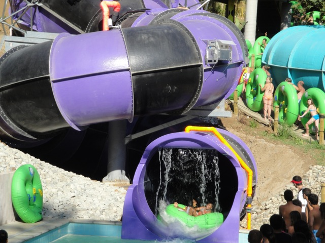
However, in true Raging Waters Style, it turned out to be overhyped and not nearly as good as expected. But it was still fun.
No caption needed.
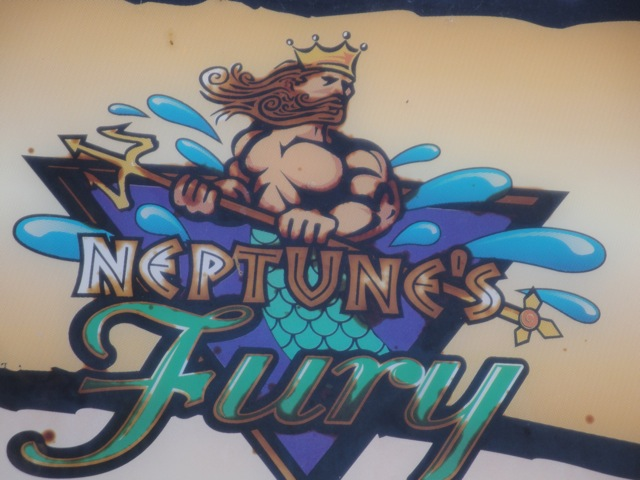
Next up, Neptunes Fury.
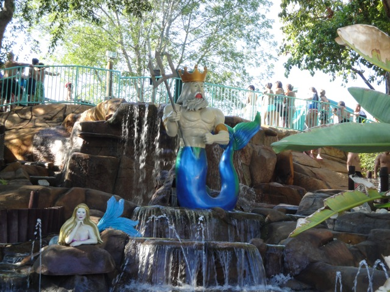
The only fury this ride has is the ability to produce really long slow moving lines.
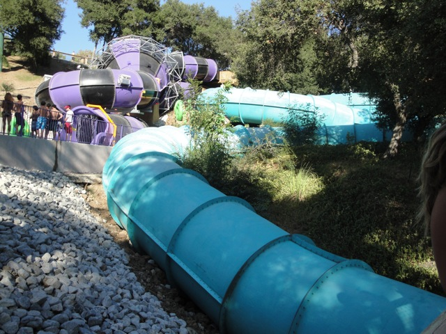
Well, at least the ending is good.
While Raging Waters may be overrated in the waterslide department, they are certinly doing a good job in the food department.
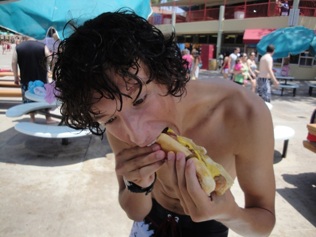
Mmm. Bacon Hot Dog. *Drool*
 Last time I was here, I didn't do Drop Out due to the line. So this time, I made sure to do it.
Last time I was here, I didn't do Drop Out due to the line. So this time, I made sure to do it.
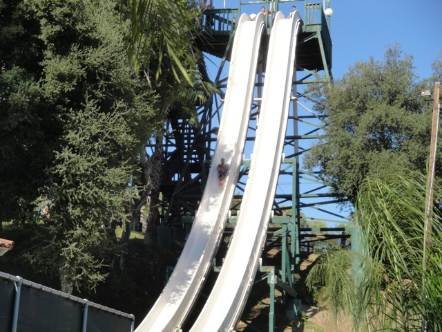
Meh. Venom Drop was much bigger. Once again, overrated.
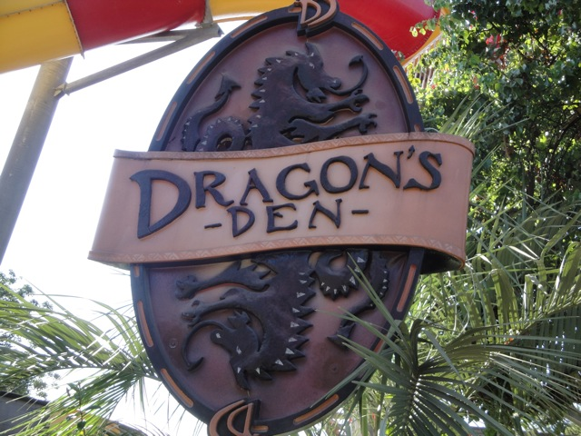
Up next, Dragons Den.
 It was a lot faster last time and we didn't vally in the bowl. So that's an improvement. =)
It was a lot faster last time and we didn't vally in the bowl. So that's an improvement. =)
 Dragons Den is fun, but Bazooka Bowls is the real toilet bowl.
Dragons Den is fun, but Bazooka Bowls is the real toilet bowl.
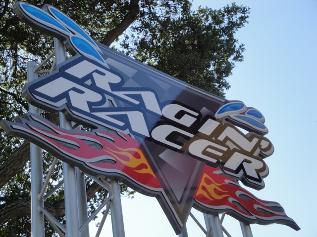
So your the bastard who got Raging River removed!
Not only was this ride responsible for Raging Racer's death, but it's trimmed!!! Yeah, I really don't like this Bamboo Racer Clone all that much.
Damn!! Good thing we rode Dr. Von Dark this morning.
Well, the kiddy area still looks nice.
 Up next, we tried the Speed Slides.
Up next, we tried the Speed Slides.
Unlike all the other slides here, Speed Slides did not dissapoint!! It's easily the best slide here! You even get airtime on it!! =)
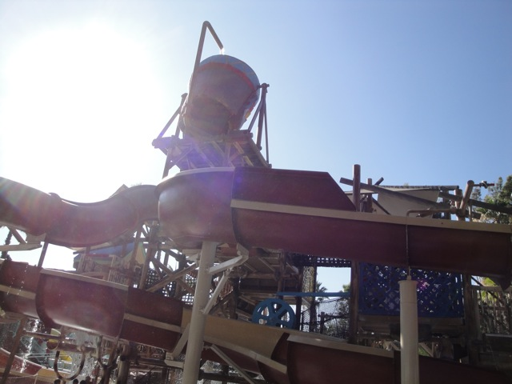
To get to Vortex, you have to go through the kiddy area.
For some strange reason, we decided to ride Vortex @ Raging Waters. (We're really stupid.)
While most of the ride is just plain boring, the first few feet of the slide felt really cracked and out of shape. I thought I cut my back and the rest of the ride was awkward cause I kept thinking it was going to cut me.
 Crap. I've trying to avoid this ride all day.
Crap. I've trying to avoid this ride all day.
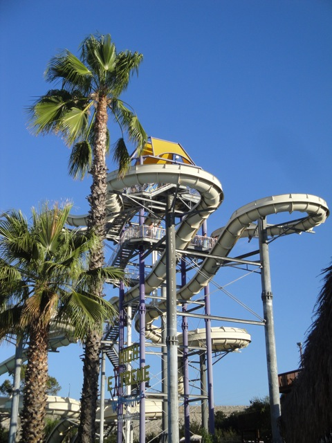
More good news. High Extreme doesn't suck the way it did 5 years ago. Perhaps those Bamboo Racer mats actually make you go faster. =)
The star attraction at Raging Waters however, isn't even a water slide. Nope. The star attraction at Raging Waters is indeed the Flowrider.
 Now those who know me are probably saying "WTF?" to that last statement since I have a fear of waves and hate surfing.
Now those who know me are probably saying "WTF?" to that last statement since I have a fear of waves and hate surfing.
The reason I love the flowrider, but hate surfing is because when you wipe out on the flowrider, you can actually breathe, wheras you can't in real surfing.
I may have flopped like a fish in a frying pan, but I loved it.
And throughout the day, we managed to put all of our stuff in that tiny little locker.
Wild Rivers
Home